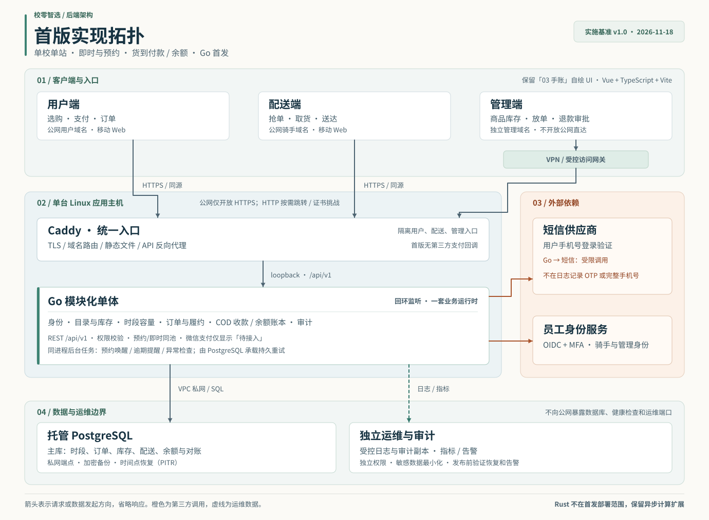

01开工顺序
冻结契约 ↗- W0
总控完成 P00，签 G0
锁定迁移、API、测试和工作区基线。
- W1
P01–P04、P06、P07 可并行
域包独立开发；前端走契约 mock，部署包先搭环境。
- W2
G1 合并域包，P05 接交易
G2 验事务和并发；G3 真联调，G4 预发演练。
- G5
P08 独立签发上线
COD 与余额分别判定；越权或对账失败则阻断。
当前工作区未初始化 Git。开多窗口前先确定经审核的仓库基线与独立分支，或使用独立副本，不共写一份目录。
02实现拓扑
架构设计 ↗

03实施分包
依赖、写域与证据要求见对应文档- P00工程基线与公共契约先行 · 冻结 API、迁移和脚手架打开 ↗
- P01身份、权限与地址G0 后 · OTP / OIDC / 三端授权打开 ↗
- P02商品、定价与库存G0 后 · 报价、库存预占和退回打开 ↗
- P03即时与预约容量G0 后 · 营业窗口、原子占用打开 ↗
- P04收款、余额与对账G0 后 · 现金上缴、余额扣退打开 ↗
- P05交易与履约G1 后 · 跨域事务、取送和异常退回打开 ↗
- P06三端 UIG0 后契约 mock，G2 后真实联调打开 ↗
- P07部署与运行G0 后搭环境，G2/G3 后预发演练打开 ↗
- P08验收与安全审计独立复核 · 分渠道出具 GO / NO-GO打开 ↗
04分段提示词
查看总文档中的完整提示词 ↗05验收门禁
用例矩阵与签字要求 ↗货到付款
收款、送达、拒付退回、上缴差异与线下退款实测。
余额支付
扣退与对账测试通过之外，另验余额来源及导入审批。生产默认关闭。
独立安全审计
越权、泄露、资金不一致或恢复失败，不允许上线。